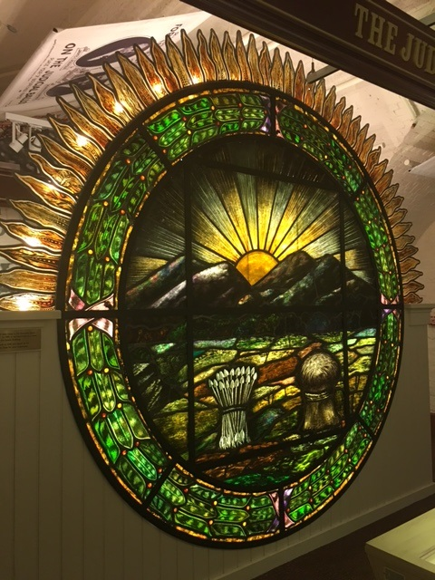
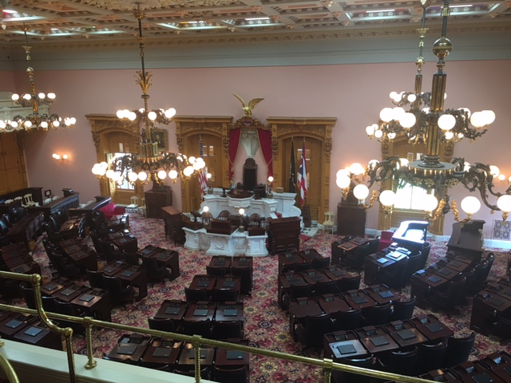
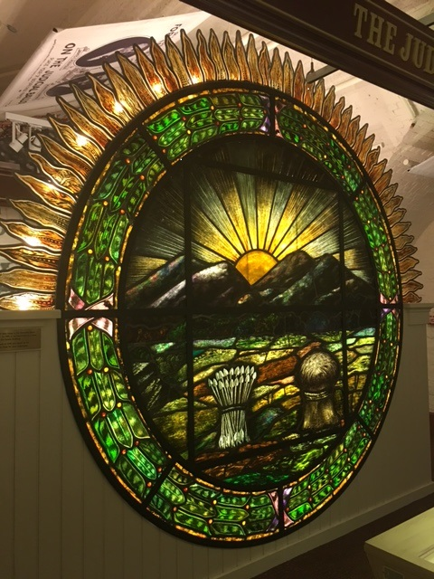
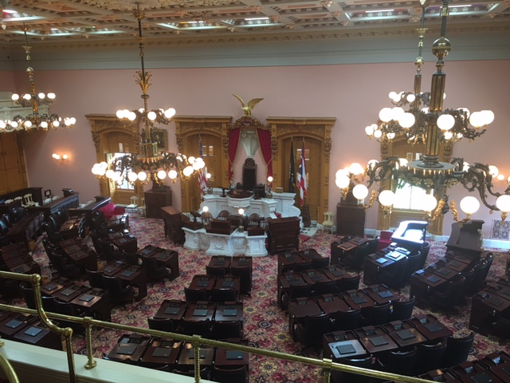
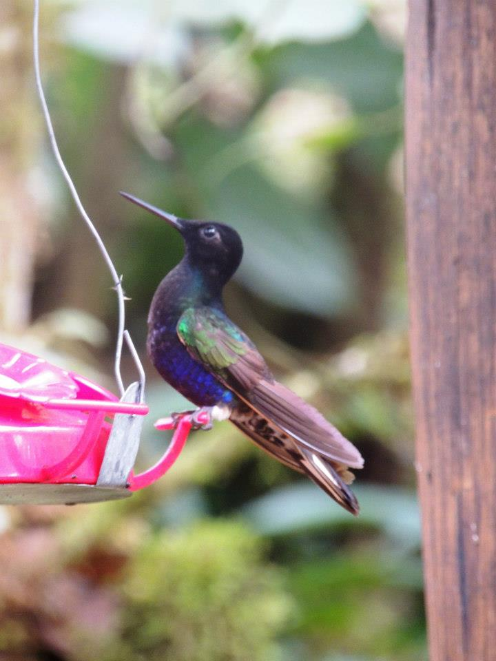
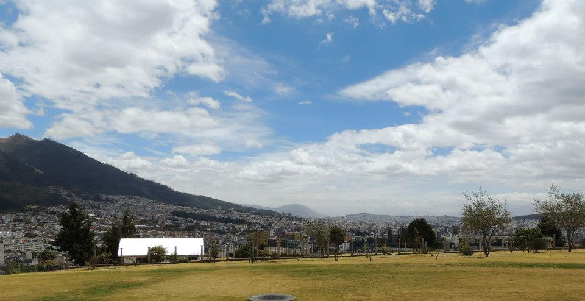
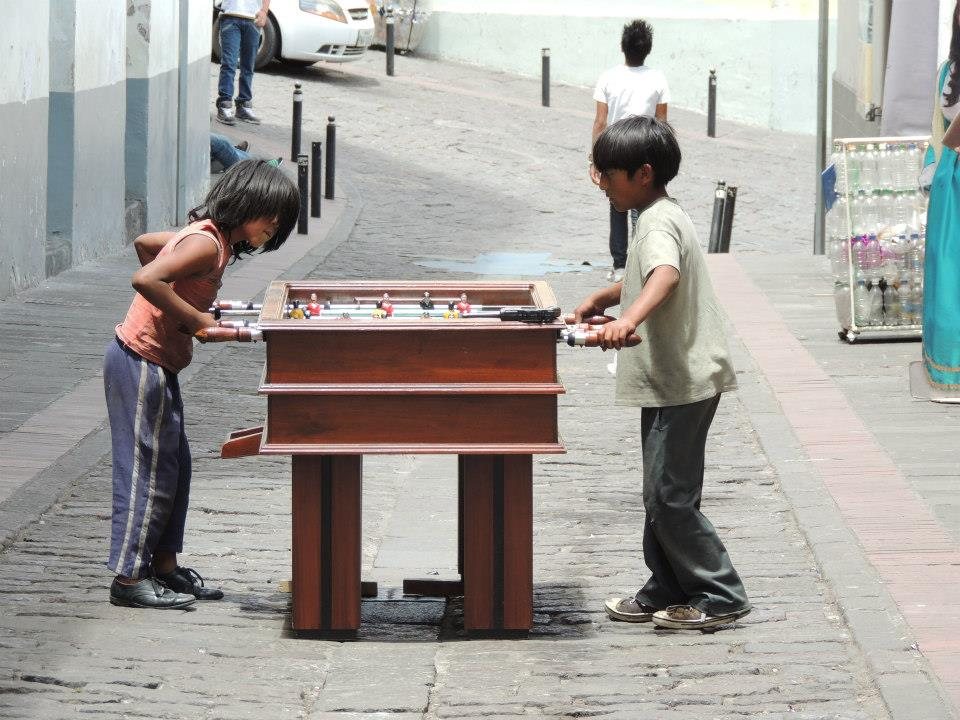

The Ohio Statehouse, Columbus
April 2017
Columbus is one of the top 10 rainiest cities in the US so it’s no wonder there are wonderful places to spend a rainy day inside. In the capital city of Columbus, you will find The Ohio Statehouse which is well worth a visit. It was completed in 1861 after 22 years of construction. An interesting feature is a map of Ohio showing each county located built into the floor. There are tours of the building every day of the week which are given by extremely knowledgeable volunteers.
 



Quito, Ecuador
April 2012
I took my first two week vacation and headed to Ecuador mainly to go to the Galapagos Islands but made a stop in Quito on the way. Quito is the capital of Ecuador and is the highest capital city sitting at elevation of 9350 feet in the Andes Mountains. Qutio was declared a World Cultural Heritage Site by UNESCO in 1978. Quito's origins date back to the first millennium when the Quitu tribe occupied the area. Quito is a beautiful historical city and I very much enjoyed my time there.


